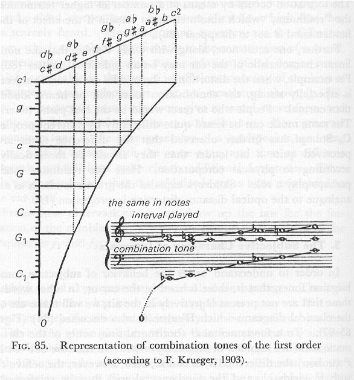
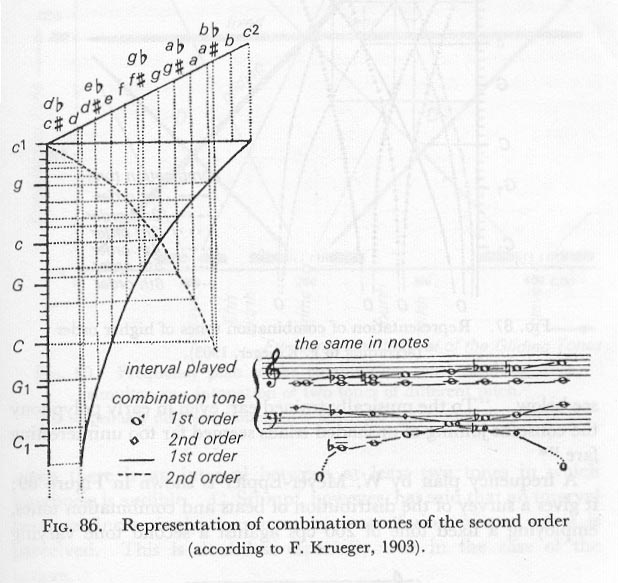
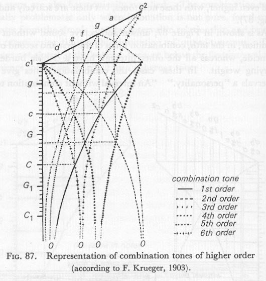
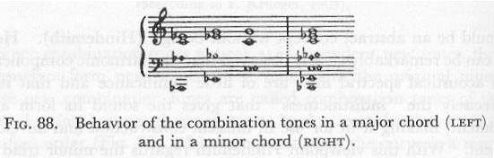
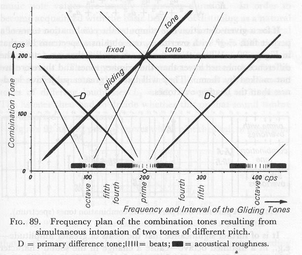

In order to understand better the behavior of subjective combination tones, that is, those formed in the ear or, in other words, those that are not present objectively in the air, we will make use of the classical diagrams which Hindemith also discussed. (Figs. 85-87).

To a fundamental c1 (horizontal line) tones of the chromatic scale are sounded in ascending order. In the case of c1 with c1 (unison) the difference is, of course, zero; however the octave c1 with c2 yields c1, and the fundamental will thus be reinforced. The complete scale for two tones between c1 and c2 yields combination tones which behave according to the drawn curve. As can be seen in the case of the major third and also the fifth, the lower octaves of the fundamentals in both these cases are supplied. In this way the lowest tones of many instruments which can no longer be projected by the resonators, are automatically supplied (e.g. violin, grand piano, organ, human voice, etc.) The musical notations accompanying the diagrams show further that the other scale steps are also harmonically supplied. The combination tone is really problematic only when intonation is not pure, for then it deviates from the simple integral intervallic relationship and brings into prominence the psychic invitation of out-of-tuneness. The curve is not closed at the bottom, because below the first interval the difference tone loses its effect as a coherent tone.
Since combination tones appear as independent new tones, they themselves form new combination tones with the original tones; these new combination tones are called combination tones of the second order, because they are not as loud as combination tones of the first order (fig 86). The computation of the curve is a result of the formation of difference tones in each case between one original tone of the scale and one combination tone of the first order. One could theoretically form new combination tones of the third order, and even higher, with these new tones, but these are scarcely audible (Fig. 87).
As is shown in Figure 87, unison and octave sound without any addition; in the fifth, combination tones of the first and second order coincide, whereas all the other intervals have a double burden of varying weight. In these cases the combination tones give the intervals a "personality." "An interval without combination tones would be an abstract concept without being" (Hindemith). Here it can be remarkably clearly observed that the harmonic components in acoustical spectral lines are of little significance and that it is precisely the "indistinctness" that gives the sound its form and content, making it fit for use in musical construction and development.
With this viewpoint Hindemith regards the minor triad as an "indistinct" derived from the major triad (compare this with the combination pictures of major and minor chords, Fig. 88). Both chords are not clearly separated from one another. "To the musically trained ear, even in early polyphony the constant joining of unshaded triads seemed far too uninteresting fare ."
A frequency plan by W. Meyer-Eppler is shown in Fig. 89; it gives a survey of the distribution of beats and combination tones, employing a fixed tone of 200 cps against a second tone varying from zero to 400 cps. The heaviness of the lines represents the relative strength of the combination tones.According to Helmholtz, we can derive the sensation of consonance and
dissonance from this behavior, speaking of dissonance when there is an
interval between at least two tones in which roughness is audible.